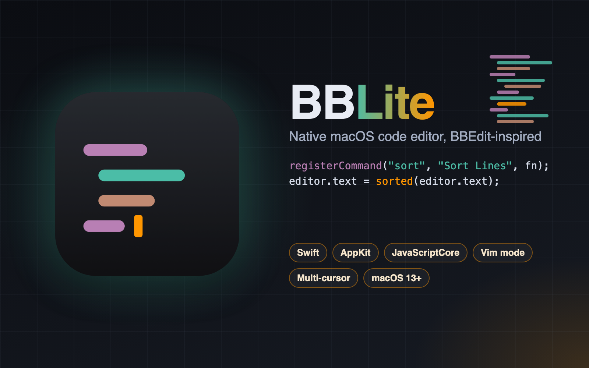
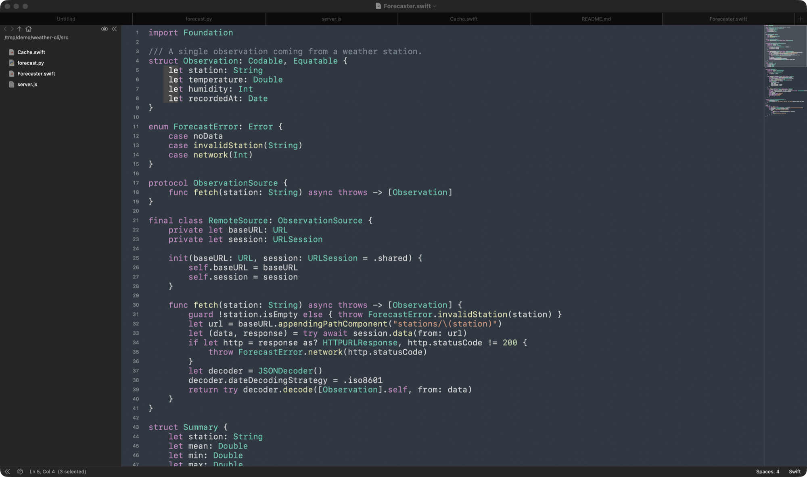
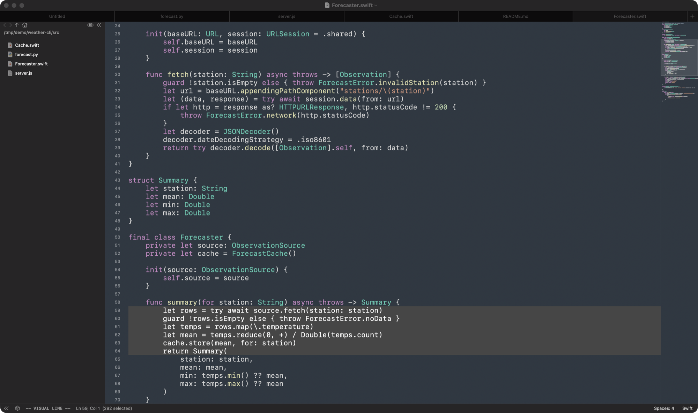

A native macOS text and code editor inspired by BBEdit: multi-cursor and column editing, Vim mode, regex search, a command palette and JavaScript scripting.
BBLite is a lightweight text and code editor for macOS, inspired by BBEdit. It aims at the sweet spot between a plain notepad and a full IDE: it opens instantly, looks like a Mac app, and puts the power tools of a professional editor a keystroke away.
It handles the everyday jobs of a developer or writer — reading and editing source files, Markdown notes, JSON and configuration, shell scripts — with native window tabs, line numbers, a current-line highlight and colour-coded syntax for Swift, JavaScript, JSON, Python, shell, HTML, CSS and Markdown. A file browser on the left and a minimap on the right make it easy to move around a project without leaving the keyboard.
What sets it apart from a simple editor is the toolbox: editing in several places at once, searching with regular expressions across a whole folder, a Vim-style modal mode for those who want it, reusable snippets and text transformations, and a scripting layer that lets users add their own commands. All of it is reachable from a single searchable command palette.

Multiple cursors turn repetitive edits into a single gesture: add the next occurrence of a word, drop carets above or below, or click to place them anywhere. Column mode extends one caret into a vertical block that can be widened or narrowed, so the same text can be typed on every line of a list, a table or an aligned set of declarations.
Every cursor moves, selects and edits together, and the whole change is a single undo step.
For people who think in motions and operators, BBLite offers an optional Vim mode that covers the everyday vocabulary: moving by word, line and paragraph, deleting, changing and yanking with counts, selecting text objects, repeating the last change and searching with regular expressions. The current mode and any pending keys are always visible in the status bar.
The usual Mac shortcuts keep working in every mode, so Vim muscle memory and native habits can live side by side.

BBLite is written entirely in Swift and distributed as a Swift Package, without an Xcode project. The code is split in two layers. A platform-independent editor core holds the real logic — tokenizing, search, multi-cursor and column selection, the Vim engine, text transformations, the file browser model and the scripting host — and is covered by an extensive automated test suite. A thin AppKit layer on top provides the windows, tabs, text view, line-number ruler, minimap, sidebar and preferences.
Languages and themes are plain data files bundled with the app, user snippets and transformations are stored as readable JSON, and scripting runs on Apple's JavaScriptCore inside a sandbox. The finished app is a universal, ad-hoc-signed bundle shipped in a DMG with an Applications shortcut.
The whole code base: an editor-core library, the macOS application and an XCTest suite, built as a Swift Package for macOS 13 and later.
Native windows and tabs, a TextKit-based text view, custom ruler, minimap and sidebar views, a floating command palette and the preferences window.
User scripting through JavaScriptCore, with a small editor API and a sandbox that exposes no file, network or process access.